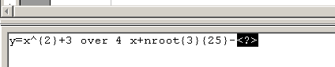

Taules de càlcul
Calcular en una taula
Una taula també es pot comportar com un full de càlcul i les cel·les es referencien com A1, A2, B1, B2, etc. La lletra representa la columna i el número representa la fila.
| A | B | C | |
|---|---|---|---|
| 1 | A1 | B1 | C1 |
| 2 | A2 | B2 | C2 |
| 3 | A3 | B3 | C3 |
La funció Taula | Fórmula (o bé la tecla de funció F2) permet inserir fórmules. En cridar-la, apareix una barra d'eines, simulant un full de càlcul, que permet entrar una fórmula a la cel·la seleccionada. Les fórmules s'escriuen a la mateixa barra d'eines i segueixen uns criteris similars al full de càlcul, tenint present que les cel·les es referencien amb els caràcters ”<” i ”>”.
-
Creeu una taula de 4 columnes i 15 files.
-
Situeu el cursor en la cel·la A5.
-
Crideu la funció Taula | Fórmula.
-
A la barra de funcions, escriviu =2+3 i confirmeu prement la tecla de retorn.
-
Ara situeu el cursor en la cel·la B8.
-
Crideu la funció Taula | Fórmula.
-
A la barra de funcions, escriviu =12*<A5> i confirmeu prement la tecla de retorn.
-
Situeu el cursor en la cel·la A10 i escriviu el nombre 6, en la cel·la A11 escriviu el nombre 3, en la cel·la A12 el 9, en la A13 el 2 i en la A14 el 12.
-
Situeu el cursor en la cel·la A15.
-
Crideu la funció Taula | Fórmula.
-
A la barra de funcions escriviu =sum<A10:A14> i confirmeu prement la tecla de retorn.
En el document següent teniu escrites les possibilitats d'escriure una funció (com podreu veure, són força àmplies): taules funcions.odt
Les fórmules es poden copiar i cal tenir present que les referències són relatives (és a dir, que si copieu la funció =SUM 12+<A3> a la cel·la de la dreta, la fórmula que hi apareixerà serà =SUM 12+<B3>) i s'actualitzen
automàticament.
L'opció de Taula | Format numèric… per a l'entrada de fórmules permet definir el tipus de format: decimal, monetari, percentual…o el nombre de decimals que apareixeran, si els milers han d'anar separats per un punt i si els
negatius han d'aparèixer en vermell. Aquest format també es pot aplicar en l'entrada de valors numèrics com a fórmula. 
Inserir un full de càlcul
Si amb el tractament de les taules numèriques que fa el LibreOffice Writer no en tenim prou, també hi ha la possibilitat d'inserir qualsevol objecte OLE que hi hagi registrat al sistema, entre els quals un full de càlcul del LibreOffice Calc. Per inserir un full de càlcul, tan sols cal cridar Insereix | Objecte | Objecte OLE… i seleccionar un objecte del tipus Full de càlcul del LibreOffice.2.1; el full inserit es mostra com a full de càlcul quan està seleccionat i activat i com a objecte quan no ho està.
Els fulls del LibreOffice Calc inserits en un document del LibreOffice Writer són veritables fulls de càlcul, amb tota la complexitat i potència que això comporta.
El següent exercici el podeu fer amb una taula o inserint un full de càlcul:
-
Creeu una taula amb les següents dades:
-
Creeu una taula de 4 columnes i 7 files i entreu la informació anterior.
-
-
Afegiu una fila per les mitjanes de cada matèria:
-
Situeu-vos a una cel·la de l'última fila i inseriu-ne una de nova
 .
. -
Situeu-vos a la primera cel·la de l'última fila i escriviu Mitjanes.
-
Situeu-vos a la cel·la següent (matèria Català) i demaneu Taula | Fórmula…
-
Escriviu =MEAN(<B2:B7>).
-
Demaneu Taula | Format numèric…
-
A Categoria, seleccioneu Número i poseu dos decimals (veureu que, a Codi de format, hi apareix escrit 0,00).
-
Premeu el botó d'Acord. Observeu-ne el valor obtingut.
-
Feu el mateix per a les mitjanes de les altres dues matèries.
-
-
Afegiu una fila que informi del valor màxim de cada matèria:
-
Afegiu una fila més a la taula i escriviu Valor màxim a la primera cel·la.
-
Situeu-vos en la cel·la següent i demaneu Taula | Fórmula…
-
A la barra de fórmules, escriviu: =MAX(<B2:B7>).
-
Demaneu Taula | Format numèric…
-
A Categoria, seleccioneu Número i poseu dos decimals.
-
Premeu el botó d'Acord.
-
Feu el mateix per als valors màxims de les altres dues matèries.
-
-
Afegiu una fila que indiqui el valor mínim de cada matèria:
-
Procediu com abans. Utilitzeu la fórmula =MIN(<B2:B7>)
-
-
Afegiu una columna que informi de la mitjana de cada alumne:
-
Afegiu una columna més al final de la taula i escriviu Mitjanes a la primera casella de la columna.
-
A la casella corresponent al primer alumne, inseriu la fórmula =MEAN(<B2:D2>).
-
Copieu la fórmula als altres alumnes.
-
-
Deseu el document amb el nom notes.odt.
Equacions científiques
El LibreOffice Writer inclou un editor d'equacions amb què situar números, símbols i text per crear fórmules matemàtiques en la pantalla i poder imprimir-les.
L'editor d'equacions és una eina d'edició visual que proporciona les parts de l'estructura d'una fórmula dins de les quals es poden escriure i enganxar números, lletres i símbols, així com modificar una fórmula existent en un document.
Per inserir una fórmula en un document cal seguir els següents passos:
-
Situar el punt d'inserció on es vulgui col·locar l'equació.
-
Seleccionar l'ordre Insereix | Objecte | Fórmula. S'activarà l'editor d'equacions mostrant la barra d'eines flotant Selecció: la barra d'eines Eines: el marc de l'equació: i una zona de programació a la part inferior de la pantalla:  En el cas que la barra d'eines Selecció no s'obri, ho podeu fer a través de Visualitza | Selecció.
-
Creeu una taula de dues columnes i set files per inserir el nom de les àrees de les figures planes i la fórmula corresponent.
-
Escriviu les fórmules tal com podeu veure-les en el document fórmules.pdf.
-
El tamany de la lletra en les fórmules feu-lo de 20 punts.
-
-
Deseu el fitxer amb el nom formules.odt.

|
|

|
|